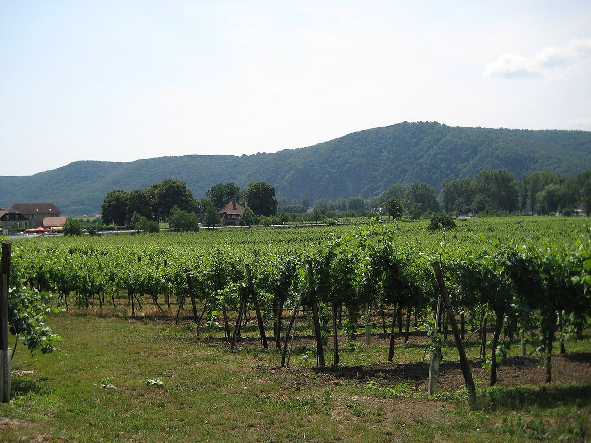

BLANC
La Wachau est un étroit tronçon de la vallée du Danube entre Melk et Krems, avec des vignes en terrasses de pierre sèche sur roche primaire. C’est la région autrichienne la plus célèbre pour ses grüner veltliner et rieslings secs.

La viticulture en Wachau est très ancienne, et son paysage actuel s’est formé surtout au Moyen Âge, lorsque des monastères de Bavière et d’Autriche, comme ceux de Melk et de Göttweig, possédaient des vignes dans la région et favorisèrent la construction de terrasses soutenues par des murets de pierre sèche. À côté de la vigne, l’abricot est une autre culture traditionnelle de la vallée. En 2000, l’UNESCO a inscrit le paysage culturel de la Wachau sur la liste du patrimoine mondial. En 1983, un groupe de vignerons fonda l’association Vinea Wachau, qui fixa ses propres règles de qualité, comme les vendanges exclusivement manuelles et l’interdiction de la chaptalisation, et créa trois catégories pour ses vins secs. Depuis le millésime 2020, la Wachau est en outre une DAC, avec des niveaux de vin régional, de commune et de lieu-dit (Ried).
La région s’étend sur une trentaine de kilomètres des deux côtés du Danube, avec des communes comme Spitz, Wösendorf, Joching, Weissenkirchen, Dürnstein et Loiben sur la rive gauche, et Mautern sur la rive droite. Le climat résulte de la rencontre de deux influences : l’air chaud de la plaine pannonienne, venu de l’est, et l’air froid qui descend la nuit des forêts du Waldviertel, au nord. Cette alternance de journées chaudes et de nuits fraîches favorise des vins aux arômes nets et à la bonne acidité. Les précipitations sont faibles, et certaines vignes sont irriguées les années sèches.
Les terrasses les plus hautes reposent sur la roche primaire, surtout du gneiss, avec de l’amphibolite et d’autres roches métamorphiques, et des sols pauvres et peu profonds. Au bas des coteaux et près du fleuve apparaissent du lœss et des dépôts sableux. Des vignobles comme Achleiten, Kellerberg, Loibenberg, Singerriedel, Steinertal et Klaus comptent parmi les plus connus.
Le grüner veltliner est le cépage le plus planté, et le riesling occupe les sites les plus caillouteux et les plus raides. Vinea Wachau classe ses vins secs en trois catégories : Steinfeder, vins légers titrant au maximum 11,5 % ; Federspiel, entre 11,5 % et 12,5 % ; et Smaragd, d’au moins 12,5 %, issus des raisins les plus mûrs. Le nom Smaragd vient d’un lézard vert émeraude qui vit dans les terrasses. Les meilleurs vins de la Wachau allient concentration, fraîcheur et une remarquable aptitude au vieillissement.